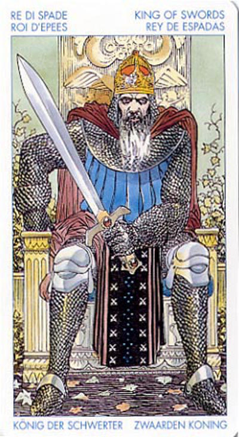

Король Мечей
Он же Фараон или Владыка.
Король Мечей - это человек идеи и действия.
Прямое положение: все, что вытекает из понятия "суд"
и то, что связано с процессом суда: власть, авторитет,
активный ум, закон, государственные учреждения
и т. п.
Значение: В прямом положении означает острый, критический взгляд на вещи, привычку не верить никому на слово, но в результате чаще всего – успех.
Своему окружению он представляется ясным и прямым, возможно, целеустремленным. Чтобы достичь своей цели, он ломает сопротивление, доходит до корней вещей, без колебания отсекает все, что представляется ему излишним.
В силу этого, многие его скорее уважают, чем любят, а некоторые и страшатся.
Если подруга короля мечей разделяет его профессиональные интересы, то он сделает из нее своего партнера. Но он без колебания распростится с любимой, если их отношения будут мешать его карьере
или другим интересам.
Сильный и энергичный человек, хотя подчас излишне жестокий и прямолинейный, король мечей более полагается на себя, нежели на других.
"Спектр" данной карты необычайно широк: от уголовного пахана до военачальника типа Чапаева.
Король мечей может выступать и как миротворец. Однако и здесь он будет действовать с позиции силы.
Если под картой подразумевается действие: время переживаний и колебаний миновало, настала пора действовать.
Мужчина с властью, связями, авторитетом. Решительный, амбициозный.
Для мужчин- конкурент в бизнесе или личной жизни. С женщинами может иметь прекрасные отношения, устроить им сказочный роман, но при этом будет очень ревнив и когда решит, что отношения исчерпали себя - оставит даму без сожалений и объяснений. Иногда указывает на военного, прокурора, судью, юриста...
Опасная сомнительная ситуация, физическая опасность.
Это человек власти, правительственный чиновник; врач или адвокат;
В перевернутом виде – может предполагать коррупцию или злоупотребление властью
или же указывать на неразборчивого в средствах человека, умышленно скрывающего от вас какую-то информацию. Способность ясно и объективно доносить до других свои мысли и идеи может принять извращенные формы и тогда манера человека общаться становится коварной, оскорбительной и наносящей вред другим людям. Кроме того, эта карта может указывать на плохой совет в финансовой или правовой сфере.
В любом положении король мечей указывает на очень страстного человека. Впрочем, это качество свойственно всем "меченосным" придворным картам.
В отрицательном значении: злобный человек, грубость, насилие, власть во зло. Запутанное судебное дело, бюрократические проволочки. Вероломство, самодурство.